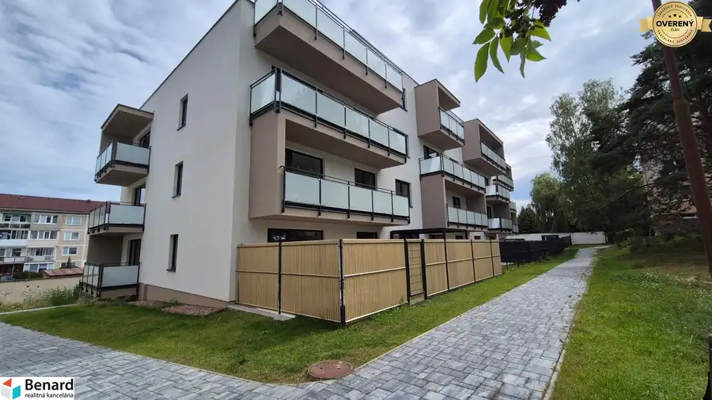

Nad kovancom 4 izbový byt, 6.NP, 124,77m2;
Stará Ľubovňa
- Dispozícia4-izbový
- Plocha107.81 m²
- Poschodie6. z 6
- Stavholopriestor
O nehnuteľnosti
Pred niekoľkými rokmi zastavanej a už zabehnutej časti sídliska západ na Okružnej ul. v lokalite „Nad kovancom“ vznikne už v poradí 5. bytový dom, ktorý bude spoločne s ostatnými bytovými domami vytvárať harmonickú súhru a zároveň atraktívne a dostupné bývanie. V bytovom dome sa bude nachádzať 28 bytov, situovaných na šiestich poschodiach a na predaj je k dispozícii už len niekoľko bytov. Každý byt má balkón, resp. lodžiu, vlastnú pivnicu a parkovacie státie, ktoré nie každé je zdarma k bytu. V bytovom dome bude sa nachádzať 6 dvoj garáži a parkovacie státie bude k dispozícii vedľa bytového domu. Byty predávame v prevedení HOLOBYT, tzn. pripravený na dokončenie kúpeľne, WC, dlažieb, obkladov, podláh, dverí, kuchynskej linky a pod. Veľkou výhodou podľa jednotlivých bytov bude krásny výhľad na Ľubovniansky hrad, okolitú prírodu a Vysoké Tatry.
V tomto bytovom dome ponúkame na predaj 4 izbový byt nachádzajúci sa na 6. poschodí.
ZÁKLADNÉ INFORMÁCIE O BYTE:
- podlahová plocha bytu je 107,81 m2 - veľký, priestranný byt;
- rozloha lodžie a terasy 16,96 m2;
- v byte plánovaný šatník a sklad;
- kúpeľňa a 2x WC;
- orientácia bytu je Západ - severovýchod - juh;
- pivnica a parkovanie v cene;
Prevedenie Holobyt:
Okná plastové s izolačným trojsklom,
vchodové dvere protipožiarne plné,
hladký poter pripravený na pokládku podlahovej krytiny,
steny – omietnuté jadrovou omietkou s finálnou vyrovnávacou stierkou,
biele maľby stien a stropov, vykurovacie telesá – doskové radiátory alebo podlahové kúrenie,
kúrenie - vlastné vykurovanie, plynový kotol,
bytový elektrický rozvádzač, rozvody elektriny v miestnostiach ukončené zásuvkami a vypínačmi,
vývody vodovodu – teplá a studená voda v kuchyni, kúpeľni, WC,
vývody kanalizačných potrubí v kuchyni, kúpeľni a WC,
bytové ventily pre odstavenie vody, vývody zaslepené tzv. záslepkou a pripravené pre montáž batérií a „sifónov“,
lodžia, balkón - keramická dlažba protišmyková, izolované, spádované,
v bytoch zavedené dátové káble, káblová TV;
Bytový dom:
na prízemí garáže, pivnice;
výťah s prízemia, bezbariérový vstup;
zateplenie, rovná strecha;
parkovanie pri bytovom dome;
Začiatok výstavby: 3. kvartál 2025
Ukončenie výstavby: 4. kvartál 2027
Mgr. Matej Jeleň
Mgr. Matej Jeleň
Certifikovaný realitný maklér
Parametre
| Celková rozloha | 124.77 m² |
|---|---|
| Úžitková plocha | 107.81 m² |
| Poschodie | 6/posledné poschodie |
| Počet poschodí | 6 |
| Stav | holopriestor |
| Plyn | áno |
| Internet | optika |
| Vykurovanie | vlastné - plyn |
| Lódžia | áno |
| Terasa | áno |
| Pivnica | áno |
| Výťah | áno |
| Parkovanie | vlastné vyhradené |
| Postavené z | Porotherm |
| Zariadenie | nezariadený |
| Zateplený objekt | áno |
| Káblová televízia | áno |
| Energetický certifikát | áno |
| Bezbariérový prístup | áno |
| Okná | plastové |
| Pripravené na výstavbu | vydané stavebné povolenie |
| Novostavba | áno |
| Dátum zverejnenia | 25. 8. 2025 |
Kde to je
Mohlo by Vás zaujímať

Byt5 245 658 €BD relax; 3 izbový byt; 4.NP; 85,88m2 Stará Ľubovňa 3-izbový74.41 m²4. podlažie Bytový dom RELAX vyrastie vedľa ŠRC v peknej časti prvých bytových domov postavených na sídlisku Západ, s ktorými bude tvoriť harmonickú súhru. Už… Byt5
289 264 €BD relax; 4IZBOVÝ byt; 4.NP; 109,73m2
Stará Ľubovňa
4-izbový82.49 m²
Bytový dom RELAX vyrastie vedľa ŠRC v peknej časti prvých bytových domov postavených na sídlisku Západ, s ktorými bude tvoriť harmonickú súhru. Už…
Byt5
289 264 €BD relax; 4IZBOVÝ byt; 4.NP; 109,73m2
Stará Ľubovňa
4-izbový82.49 m²
Bytový dom RELAX vyrastie vedľa ŠRC v peknej časti prvých bytových domov postavených na sídlisku Západ, s ktorými bude tvoriť harmonickú súhru. Už…